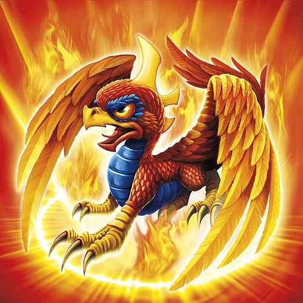
Sunburn
Born in the center of an active volcano, Sunburn is part dragon, part phoenix, and 100% fire power. He is very proud of his unique heritage, and is the only dragon and phoenix hybrid known to exist in Skylands. This rare combination makes him a desirable target for dark wizards and bounty hunters that seek to gain power by unlocking the secrets behind Sunburn’s ability to teleport. Joining the Skylanders gave Sunburn a way to help defend the world from evil, but also provided him with protection, as he remains one of the most sought after creatures in Skylands.
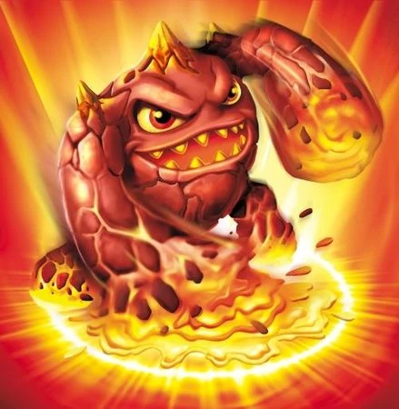
Eruptor
Eruptor is a force of nature, hailing from a species that lived deep in the underground of a floating volcanic island until a massive eruption launched their entire civilization to the surface. He's a complete hot head -- steaming, fuming, and quite literally erupting over almost anything. To help control his temper, he likes to relax in lava pools, particularly because there are no crowds.
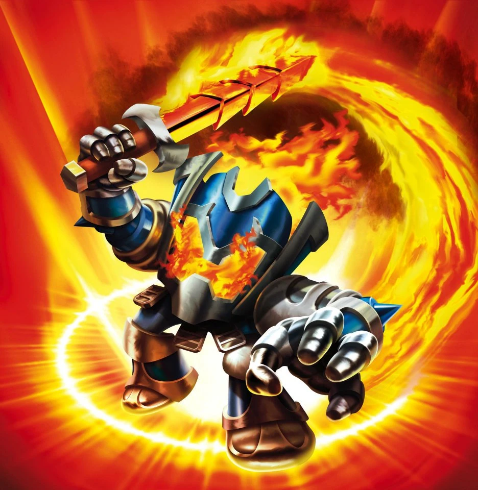
Ignitor
On his first quest as a knight, Ignitor was tricked by a cunning witch into wearing a magical suit of armor that he was told would resist fire from a dragon. But as it turned out, it was made of cursed steel. He journeyed to a dragon’s lair where a single blast of fire transformed him into a blazing spirit, binding him to the suit of armor for eternity. Despite this setback, Ignitor remains a spirited knight who is always fired up to protect Skylands from evil… and find the witch that tricked him.
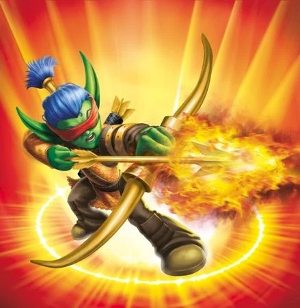
Flameslinger
Flameslinger is an Elven archer with incredible aim. In fact, he is so good that he wears a blindfold just to prove it. When he was young, he rescued a fire spirit from a watery doom and was gifted an enchanted bow and magical fire boots that he now masterfully uses to defeat evil throughout Skylands. With the scorched earth he leaves behind, you can always tell where he has been.
Hot Head
Hot Head had always been a short tempered fire giant. But it was when magical oil was discovered in Skylands that fuel was really added to the fire. As exciting as the discovery was, the celebration lasted only 5 minutes - coming to an abrupt halt when Hot Head needed to cool off and plunged into the thick black pool, causing the entire island to explode! Though it would be another 2,000 years before magical oil was discovered again, the impact that it had on Hot Head was immediate. He was instantly infused with magical oil, giving him the ability to generate an infinite supply of fuel - making him incredibly volatile, highly combustible, and ready to torch anything that got in his way.
Hot Dog
Hot Dog was born in the belly of the Popcorn Volcano. While on a nearby mission, a team of Skylanders had come across the stray fire pup when the volcano erupted and Hot Dog came rocketing straight into their camp, accidentally setting Gill Grunt's tent on fire. Using his nose of danger, he helped the Skylanders complete their mission - even pouncing on a Lava Golem like a blazing comet when it threatened his new friends. After displaying such loyalty and bravery, Hot Dog was brought back to Eon's Citadel where he became a Skylander - and then he proceeded to bury Eon's staff.
Blast Zone
As a young furnace knight, Blast Zone was part of the Skylands Bomb Squad, specializing in the safe disarming and removal of troll bombs. But it was not long before the trolls got tired of Blast Zone constantly thwarting their evil plans, so they decided to go after the furnace knight himself. Late one night, an army of trolls snuck into Blast Zone’s village and threw 100 bombs down his chimney. Acting quickly, Blast Zone swallowed each bomb and then belched a jet of fire back at the invaders – sending them fleeing with their boots on fire. The tale of the attack eventually reached the ear of Master Eon, who knew the brave furnace knight had all the makings of a Skylander.
Fire Kraken
Raised on a small island surrounded by a vast ocean of fire, Fire Kraken was the swiftest, most agile warrior his tribe had ever seen. And when a fleet of Fire Troll ships arrived to steal the legendary Burning Heart, a huge elemental crystal that fueled the fiery seas, Fire Kraken leapt into action. Using a magical staff to control his natural ability to wield fire, he set the mighty ships ablaze, forcing the trolls into a hasty retreat. Having saved the Burning Heart as well as his homeland, Fire Kraken soon joined the Skylanders, where he knew his skills would help those in need.
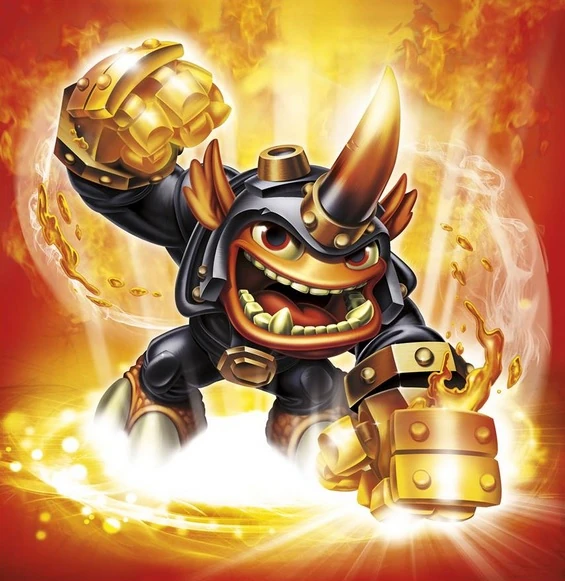
Fryno
Fryno was once a member of the notorious Blazing Biker Brigade and spent most of his youth riding around Skylands with the rest of his crew. But what Fryno did not realize was that, while he enjoyed a life of freedom and adventure, his crew was responsible for acts of burglary throughout Skylands. When Fryno discovered that he had been riding around with a bunch of villains, he burned with rage and demanded that they make amends for the wrong they had done. This resulted in an epic fight, which Fryno won, and the disbanding of the Blazing Biker Brigade. Fryno was in the midst of returning the valuables his crew had stolen when he met Master Eon, who was impressed with his good character and fighting abilities, and offered him a membership to a new crew -- the Skylanders.
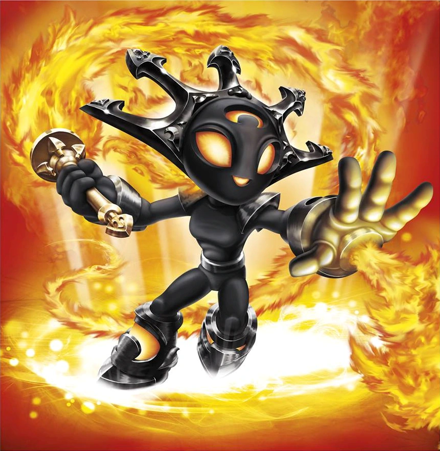
Smolderdash
Smolderdash had always wanted to be a royal defender of the Fire Temple - home of the First Flame, a sacred torch that had been ignited by the original Fire Source. Unfortunately, she had been born during an eclipse and was believed by her people to be cursed, which prevented her from such an honor. But when Kaos stole the flame and used it to light the candles on his birthday cake, it was Smolderdash who went after it. Blazing like a comet, she dashed into Kaos' Lair, repelled the troll security force with her flaming whip, and retrieved the sacred flame just before Kaos blew out the candles. Smolderdash returned home as a champion of her people and was finally granted the honor of becoming a royal defender. But she graciously declined, having set a new goal for herself - to help fight against Kaos as a member of the Skylanders.
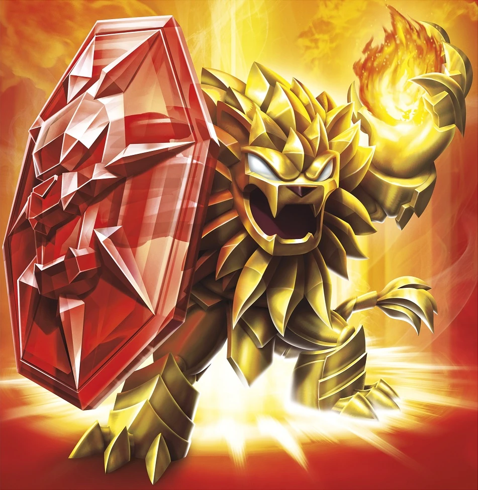
Wildfire
Wildfire was once a young lion of the Fire Claw Clan, about to enter into the Rite of Infernos – a test of survival in the treacherous fire plains. However, because he was made of gold, he was treated as an outcast and not allowed to participate. But this didn’t stop him. That night, Wildfire secretly followed the path of the other lions, carrying only his father’s enchanted shield. Soon he found them cornered by a giant flame scorpion. Using the shield, he protected the group from the beast’s enormous stinging tail, giving them time to safely escape. And though Wildfire was injured in the fight, his father’s shield magically changed him – magnifying the strength that was already in his heart – making him the mightiest of his clan. Now part of the Trap Team, Wildfire uses his enormous Traptanium-bonded shield to defend any and all who need it!
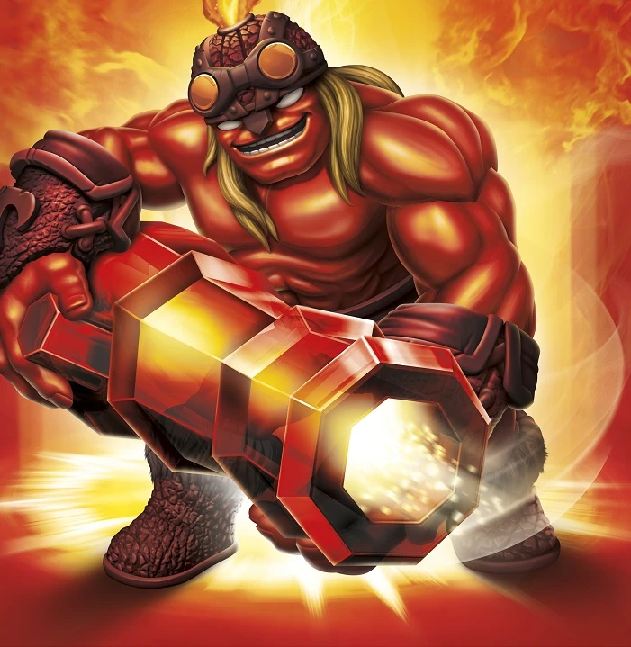
Ka-Boom
Ka-Boom hails from an ancient volcanic island known as Munitions Forge, where he and his people crafted machinery that was used all throughout Skylands. But the ruthless Captain Ironbeard wanted the forge for himself so he could build an unstoppable pirate armada. With a fleet of pirate ships approaching, Ka-Boom went to work, creating the greatest anti-pirate weapon ever forged – The Boom Cannon! When Ironbeard arrived with his invaders, Ka-Boom met them at the edge of the docks with his cannon lowered, still smoldering red hot from having just come out of the fire. One by one, he sank their ships until Captain Ironbeard finally retreated. Now as a valued member of the Trap Team, Ka-Boom uses his Red Hot Traptanium Cannon to blast evil in the broadsides!
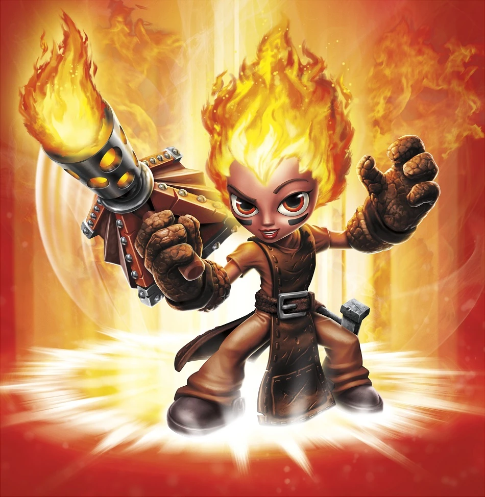
Torch
Torch’s childhood was spent working with her grandfather as a dragon keeper, where she helped tend to a stable of dragons that protected her village. One year, an evil Snow Dragon unleashed a terrible blizzard that trapped her entire homeland inside a massive ice glacier! Torch was the only one to escape. Having always been fearless, she set out at once to rescue the villagers and her dragons from their chilly fate. Armed with her Firespout Flamethrower, she fought hard through the treacherous conditions and bravely defeated the Snow Dragon in an epic battle. After the village was free from its icy doom, Torch returned home to find her grandfather missing. The only token left behind was his lucky flaming horseshoe. Now as a member of the Skylanders, Torch wields her powerful flamethrower as well as her lucky horseshoe in hopes it will one day lead her to the grandfather she had lost.
Trail Blazer
Trail Blazer was always hot tempered, especially when he saw anything as being unfair. One day, he came across another unicorn that was trapped in a net. But it wasn’t just any unicorn. It was the mythical Unocorn – a magical creature with a Churro Horn that sprinkled enchanted cinnamon throughout Skylands. Trail Blazer freed it at once. Soon after, the Dark Wizards who had set the trap returned, and were very angry to find their dastardly deed had been thwarted. But Trail Blazer was much more fired up – for it turned out the spicy cinnamon from the Churro Horn had somehow rubbed off on him and mixed with his elemental fire. So he was literally set ablaze with fury! He then ran fiery circles around the wizards, forcing them to flee and never return. After realizing his newfound fury could be used to fight evil everywhere, Trail Blazer sought out the Skylanders, who immediately welcomed him as a member.
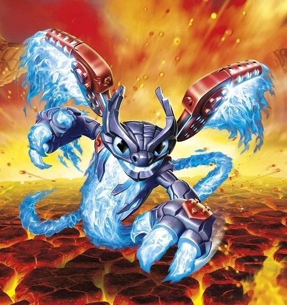
Spitfire
Spitfire was on pace to become the fastest driver in the Super Skylands Racing Circuit. With his lightning quick reflexes and nerves of steel, this tech enhanced flame spirit was absolutely unbeatable. But during the championship event at Skywinder Canyon, he was illegally bumped off course by a goblin racer and sent flying into the canyon wall in a fiery explosion! Most thought that this would put an end his racing career. But three weeks later, he was back on the track, more fired up than ever to claim the title. Unfortunately, it was then that all of Skylands fell under the rule of Kaos in his Sky Eating machine, and the racing came to an end. That’s when Spitfire was approached by Master Eon with an offer that could get him back behind the wheel as the new leader of an elite driving team – the Skylander Superchargers!
Lava Lance Eruptor
Lava Lance Eruptor is the Supercharger counterpart of Eruptor in Skylanders Superchargers. His signature vehicle is the Burn-Cycle.
Hammer Slam Bowser
Bowser is the king of the Koopas and believes himself to be the supreme, unquestioned ruler of a kingdom far from Skylands. A hot-tempered and spiky-shelled warrior, he was transported to Skylands by traveling through a rift that had been created by Kaos' terrible Sky Eater. The Skylanders sent out a distress call across all the dimensions to call for reinforcements, and for reasons known only to Bowser himself, he has decided to join this epic battle against Kaos and the Darkness in his Clown Cruiser as the newest and most lethal of all the SuperChargers!
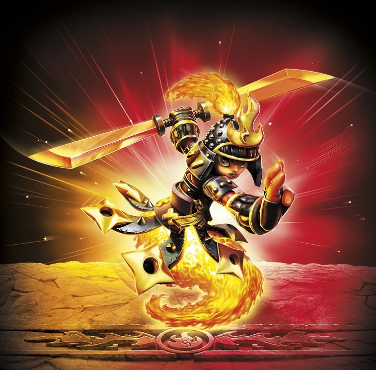
Ember
Ember was raised inside the Dragonfire Dojo, having come from a long line of Fire Sentinels that were skilled in the art of Dual-Blades. It was the dream of her father that Ember would follow their tradition and take over the family training facility, and so she practiced every day. She was naturally gifted, and soon even the greatest Dual-Blade Masters were no match for Ember. When Kaos heard of this, he took over her village and banned martial arts entirely, for fear of an uprising. But Ember fought back, unleashing an impressive barrage of Samurai pyrotechnics that drove the invaders away. Even though her village was free, she knew then that there was greater evil out there that needed to be stopped, and so she joined the Skylanders to train others in the art of the Sentinel Battle Class. One day though, Ember plans to return to her homeland and reopen her family’s school, but not until Skylands is safe once and for all.
Flare Wolf
When Flare Wolf was young, he worked all summer to earn the coveted Fireworks Badge from the Wolf Scouts. In doing so, he had earned the right to light the fireworks in the annual St. Wigglewort's Day celebration - an honor of which Flare Wolf was extremely proud. But on the day of the celebration, a band of evil Ice Ogres attacked his village and took the entire community hostage! The only weapons at his disposal were the town's supply of fireworks they were saving for the evening festivities. One by one, Flare Wolf lit them in the center of the Ogre camp, launching a dazzling display of pyrotechnics that sent the Ogres running. Not only had Flare Wolf saved his village, he had also given its residents the most spectacular fireworks show they had seen in over 100 years! Even Master Eon was impressed, and offered Flare Wolf a position at the Academy as the Official Fireworks Launcher. But after seeing him in action, he quickly realized that Flare Wolf had much more to offer as a Sensei!
Tae Kwon Crow
Skylanders Trap Team
Tae Kwon Crow was a ninja who served as leader of an evil gang of Sky Pirates in the Skyhighlands. After escaping from Cloudcracker Prison, the crow returned to the Skyhighlands, where he soon encountered the Skylanders throughout his hideout, not knowing who they are. He challenged them to a few games of Skystones Smash, before ultimately battling the Skylanders atop the pirate stronghold for the possession of the crystal prism. Tae Kwon Crow was eventually defeated and trapped.
After his capture, the Skylanders took him to The Golden Desert along with Blaster-Tron for their Villain Quests, but not without fighting the Golden Queen's guards along the way. His Quest, called "Gopher the Gold!", was with Tessa and Whiskers, where the former tasked him to save four colonies of gophers from the Hazzard Birds to prevent them from forcing the rodents into participating in their circus, while she conducts research on the golden gophers in each colony. After completing the Quest, he was rewarded with Tessa's thanks and a new outfit.
Skylanders Imaginators
Tae Kwon Crow was once the leader of a villainous band of air pirates in Skyhighlands. But pirating was never his true passion. All that really mattered to him was stopping anyone that “dared” to do anything that he deemed out of character. If a cake maker “dared” to make a pie instead, he would put a stop to it. If an ordinary sheep “dared” to baaahh longer than normal, he would end that nonsense right then and there. Tae Kwon Crow could not even stand it when anyone even “dared” of thinking of daring to do anything. But after he was captured by the Trap Masters, Master Eon dared him to change his ways and use his abilities for good instead. At first, Tae Kwon Crow was angry that Eon would dare make such a bold suggestion, but he soon realized that he could actually serve as a role model to young Ninjas and help them avoid the dark path that he went down. Forsaking his katana for the more traditional roundhouse fire-kick, Tae Kwon Crow now defends Skylands from whoever dares threaten it.